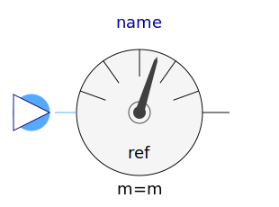
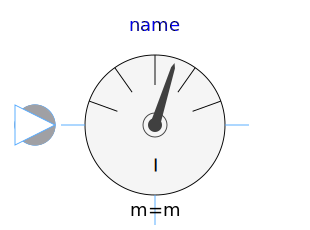
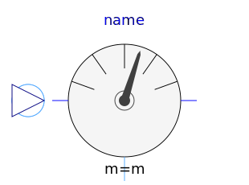
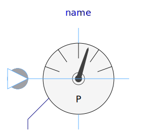
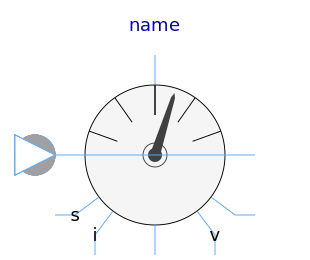
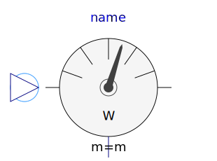

This package hosts sensors for quasi stationary multiphase circuits. Quasi stationary theory can be found in the references.
| Name | Description |
|---|---|
|  ReferenceSensor | Sensor of reference angle gamma |
| FrequencySensor | Frequency sensor |
| PotentialSensor | Potential sensor |
| VoltageSensor | Voltage sensor |
| VoltageQuasiRMSSensor | Continuous quasi voltage RMS sensor for multi phase system |
|  CurrentSensor | Current Sensor |
|  CurrentQuasiRMSSensor | Continuous quasi current RMS sensor for multi phase system |
|  PowerSensor | Power sensor |
|  MultiSensor | Multiphase sensor to measure current, voltage and power |
|  AronSensor | threephase Aron sensor for active power |
| ReactivePowerSensor | threephase sensor for reactive power |